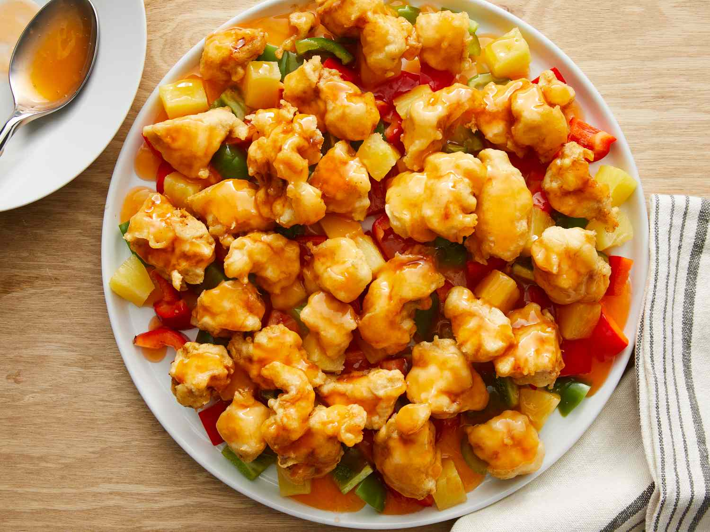

Sweet and Sour Chicken

Description:
This sweet and sour chicken recipe makes crispy fried chicken pieces with pineapple and bell pepper served with a homemade tangy and sweet sauce.
Make restaurant-worthy sweet and sour chicken from scratch in the comfort of your own home with this top-rated recipe.
For this Recipe You will need:
- For The Sauce: Water, pineapple juice, white sugar, white vinegar, and orange food coloring (optional)
- For the Batter: Cornstarch, self-rising flour, vegetable oil, an egg, salt, and white pepper
- For the Chicken: Cut Eight boneless chicken breast halves into 1-inch cubes for this sweet and sour chicken recipe
- For Colour:Pineapple chunks and two green bell peppers (cut into 1-inch pieces) give the dish color and flavor
Ingredients:
- ¾ cups water
- 1 (8 ounce) can pineapple chunks, drained (juice reserved)
- ¾ cup white sugar
- ½ cup distilled white vinegar
- 2 drops orange food color
- ¼ cup cornstarch
- 2x ¼ cups self-rising flour
- 2 tablespoons vegetable oil
- 2 tablespoons cornstarch
- 1 large egg
- ½ teaspoon salt
- ¼ teaspoon ground white pepper
- 8x skinless, boneless chicken breast halves - cut into 1-inch cubes
- 1x quart vegetable oil for frying
- 2 green bell pepper, cut into 1-inch pieces
Directions:
Step 1: Combine 1 ½ cups of water, reserved pineapple juice, sugar, vinegar, and orange food coloring in a medium saucepan. Bring to a boil over medium heat; set aside.
Step 2: Mix 1/4 cup cornstarch and 1/4 cup water together in a small bowl until smooth; pour into the sauce, stirring continuously, until slightly thickened.
Step 3: Place flour, 2 tablespoons oil, 2 tablespoons cornstarch, egg, salt, and white pepper in a large bowl; gradually whisk in 1 1/2 cups water to make a thick batter.
Step 4: Add chicken pieces; stir until well coated.
Step 5: Heat oil in a large, deep skillet or wok to 360 degrees F (180 degrees C). Fry chicken pieces in preheated oil until golden, about 10 minutes; remove and drain on paper towels.
Step 6: Layer green peppers, pineapple chunks, and cooked chicken pieces on a platter; pour hot sweet and sour sauce over top.
Return to Homepage